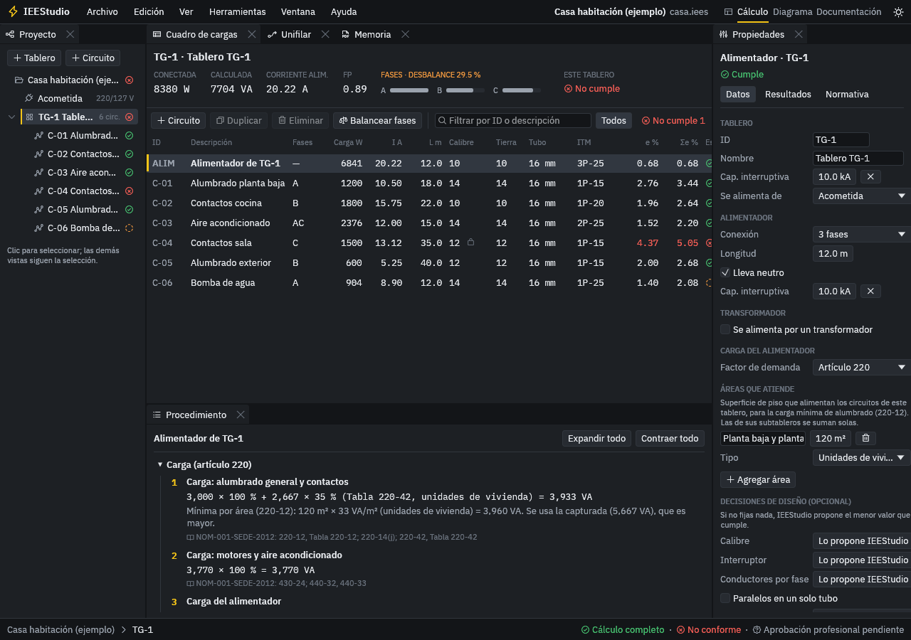
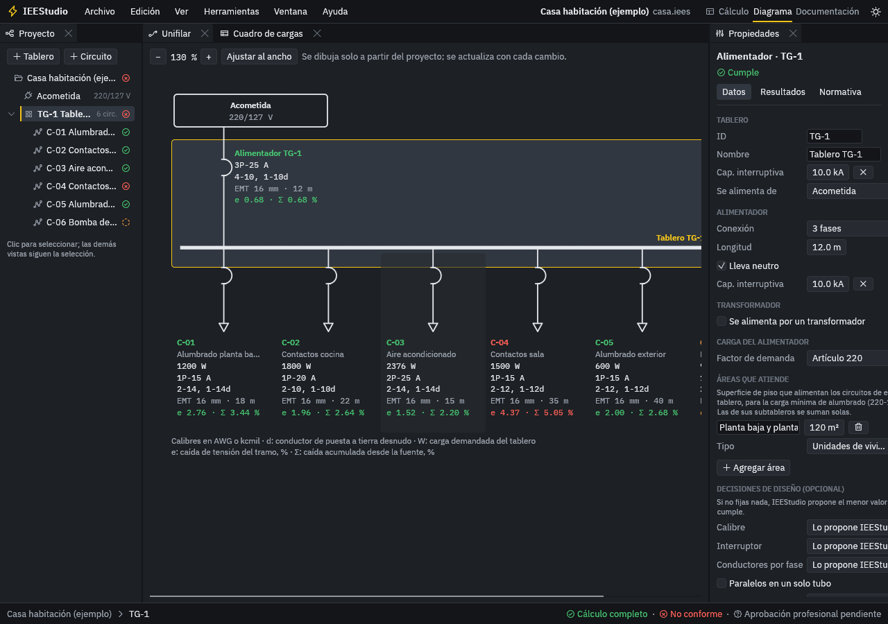
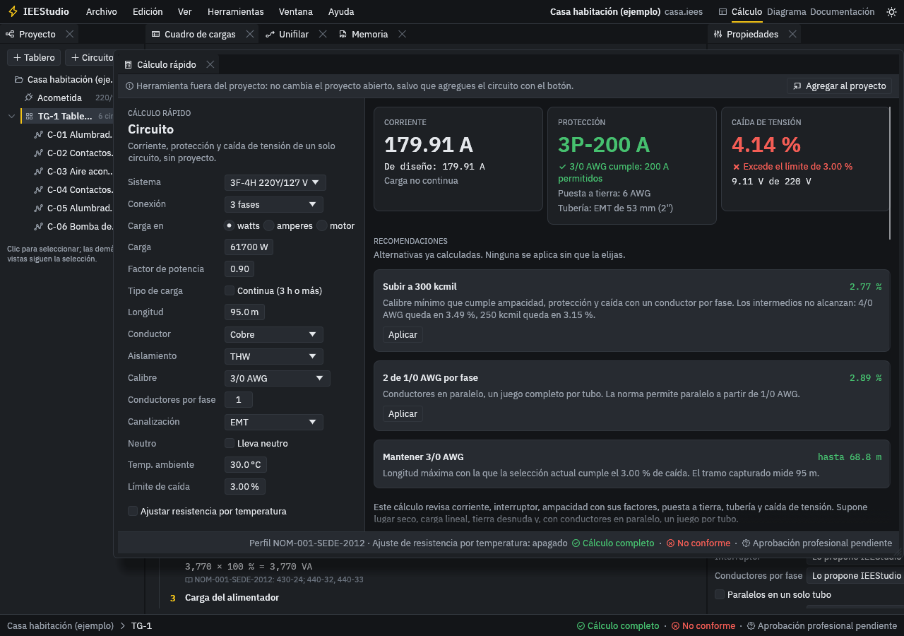

Cálculo de instalaciones eléctricas con cada paso a la vista
IEEStudio calcula instalaciones de baja tensión conforme a la NOM-001-SEDE-2012 y arma la memoria de cálculo. Cada resultado muestra la fórmula, los valores sustituidos y el artículo de la norma que lo respalda.
Gratuito y de código abierto. Es una versión de prueba: revisa los resultados antes de usarlos en un proyecto.
-
Corriente nominal
I = P / (V · fp)
I = 1,500 / (127 · 0.90) = 13.12 A
-
Caída de tensión
ΔV = 2 · I · L · (R · cos θ + X · sen θ) / n
ΔV = 2 · 13.12 · 0.0350 · (6.6 · 0.90 + 0.223 · 0.436) / 1 = 5.55 V
NOM-001-SEDE-2012: Capítulo 10, Tabla 9
-
Caída acumulada desde la fuente
e total = 0.68 + 4.37 = 5.05 %
5.05 % es mayor que el límite de 5.00 %.
NOM-001-SEDE-2012: 210-19(a)(1), nota 4; 215-2(a)(1), nota 2
Un solo modelo de la instalación, del cuadro de cargas a la memoria
Capturas la fuente, los tableros y los circuitos una vez. El cuadro de cargas, el diagrama unifilar y la memoria en PDF salen de ese mismo modelo y se recalculan con cada cambio.



Qué calcula
- Conductores y protecciones
- Menor calibre que cumple por terminales, temperatura, agrupamiento, protección y caída de tensión, y te dice cuál de esos criterios lo decidió. Propone conductores en paralelo cuando hace falta.
- Caída de tensión
- Por impedancia con la Tabla 9, por tramo y acumulada desde la fuente, con la longitud máxima permitida.
- Carga de alimentadores
- Artículo 220: carga mínima de alumbrado por área, contactos, aparatos fijos y equipo de cocina, con sus factores de demanda.
- Cortocircuito
- Corriente de falla en cada tablero por el método de impedancias, con aportación de motores, y capacidad interruptiva de cada interruptor.
- Motores y aire acondicionado
- Corrientes de tabla, conductor al 125 %, interruptor, relevador de sobrecarga y alimentadores con el motor mayor.
- Transformadores
- Hasta 600 V: primario, secundario, protección de la Tabla 450-3(b) y falla referida a través del transformador.
- Puesta a tierra y tubería
- Conductor de puesta a tierra y del electrodo, ocupación de tubo conduit EMT, IMC, RMC y PVC.
- Balanceo de fases
- Reparte los circuitos de un tablero entre las fases para dejarlo lo más balanceado posible.
- Memoria de cálculo en PDF
- Datos de la obra, cuadro de cargas, diagrama unifilar, procedimiento de cada tramo y espacio para firmas.
- Excel
- El cuadro de cargas se exporta a Excel y se importa de vuelta, para capturar en la hoja que ya usas.
Nunca supone un dato
Cada circuito, alimentador y tablero queda en uno de tres estados. Si falta información o la norma no cubre el caso, el programa no inventa un valor para poder decir que cumple.
Se calculó con todos sus datos y pasó cada verificación.
C-01 Alumbrado planta baja: caída de 2.76 % de 3.00 % permitido.
Al menos una verificación falla. Dice cuál y propone alternativas ya calculadas.
C-04 Contactos sala: caída acumulada de 5.05 % de 5.00 % permitido.
Falta un dato o la tabla no cubre el caso. Dice exactamente qué falta.
C-06 Bomba de agua: falta la corriente de placa del motor para ajustar el relevador de sobrecarga.
La aprobación es tuya. IEEStudio verifica contra la norma, pero nunca marca un proyecto como aprobado: esa firma la da el ingeniero responsable.
Instalar en Windows
-
Descarga el instalador con el botón de arriba o desde la página de versiones en GitHub.
-
Si Windows muestra «Windows protegió su PC», elige «Más información» y luego «Ejecutar de todas formas».
Aparece porque el instalador todavía no tiene firma digital. La firma está en trámite; mientras tanto puedes comprobar cómo se compila cada instalador en la sección de abajo.
-
Abre IEEStudio desde el menú Inicio. Los proyectos se guardan con la extensión
.ieesy se abren con doble clic.Si el acceso directo aparece sin ícono, revisa en Seguridad de Windows, Historial de protección, que el antivirus no haya quitado el programa, y permítelo.
Requiere Windows 10 u 11 de 64 bits. En Linux se puede compilar desde el código fuente.
Código abierto, de principio a fin
Puedes revisar cada cálculo
El código, las tablas de la norma en CSV y los casos de referencia con los que se prueba están publicados en GitHub. Cada tabla y cada regla cita su cláusula.
Nadie sube instaladores a mano
Cada instalador se compila en GitHub Actions a partir del código público. El registro de cada compilación se puede consultar en el repositorio.
Tus proyectos no salen de tu computadora
El programa no envía información a ningún lado. Esta página no usa cookies ni rastreadores; solo consulta a GitHub cuál es la versión más reciente.
Gratuito y libre
Licencias MIT o Apache-2.0, a tu elección. Puedes usarlo en proyectos de tu trabajo sin costo.
Política de firma de código
Free code signing provided by SignPath.io, certificate by SignPath Foundation.
Solicitud en trámite. Mientras no se apruebe, los instaladores se publican sin firma.
- Los instaladores se compilan en GitHub Actions desde el código público del repositorio; ningún binario se compila ni se sube a mano.
- Autor y responsable de aprobar cada versión firmada: Juan Antonio Aguilar Martínez.
- Privacidad: el programa no transfiere información a otros sistemas en red, salvo que el usuario lo pida expresamente.